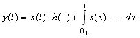
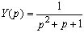

|
Тестовые задания 2-го уровня
Второй уровень – "знать ... и уметь использовать" – это способность студента воспроизводить учебный материал с требуемой степенью научной точности; сформулировать и записать принцип, закон, теорему, определение, явление, событие и т. п., с достаточной полнотой доказать теорему, утверждение, описать явление и т. д., и уметь использовать усвоенные знания для решения типовых задач по известным ему методикам и выполнять конкретные действия с реальными объектами дисциплины (с возможным использованием справочной литературы).
Целью тестирования на 2-ом уровне является выявление способностей студента анализировать процессы и явления в электрических цепях и решать типовые задачи по дисциплине, анализируя результаты выполнения заданий на репродуктивную деятельность по воспроизведению, т. е. на повторение ранее усвоенных операций.
Примеры тестовых заданий 2-го уровня:
1. Задание на подстановку (обычно пропущенного одного или нескольких факторов взаимосвязи процесса или элементов формулы): "Завершите написание формулы для определения реакции y(t) линейной электрической цепи на импульсное входное воздействие x(t), используя третью форму интеграла Дюамеля:

Дайте определение пропущенной величины".
Эталон (3 с. о.): (1) Реакция линейной электрической цепи на импульсное воздействие равна
где (2) g(t – τ) – импульсная (весовая) функция цепи при нулевых начальных условиях, которая умножается на входное воздействие в виде (3) смещённой по оси времени на интервал τ дельта-функции δ(t – τ).
2. Задание – типовая задача: "Определите передаточную проводимость цепи (см. рис.), если R = 1 Ом; L = 1 Гн; С = 1 Ф".
Эталон (4 с. о.): (1) Передаточная проводимость цепи
(2) Воспользовавшись правилом делителя тока, запишем выходной операторный ток
 . .
(3) Операторный ток на входе цепи:
 . .
(4) Проведя несложные преобразования, окончательно получим выражение передаточной проводимости
.
3. Конструктивное задание: "Составьте алгоритм расчёта операторным (Лапласа) методом выходной величины y(t) линейной электрической цепи при её подключении к источнику электрического сигнала. Структура цепи и параметры её элементов известны".
Эталон> (4 с. о.): (1) Вычерчивание операторной схемы замещения и выбор условно положительных направлений операторных токов и напряжений ветвей.
(2) Выбор метода расчёта (МУН, МКТ и т. п.) и составление системы уравнений в операторной форме для определения изображения выходной величины Y(p).
(3) Решение системы алгебраических уравнений и определение изображения Y(p) выходной величины.
(4) Переход от изображения Y(р) к оригиналу выходной величины (посредством формул разложения, интеграла Римана-Меллина или справочной таблицы перехода от изображений (по Лапласу) к оригиналам переходных функций).
|